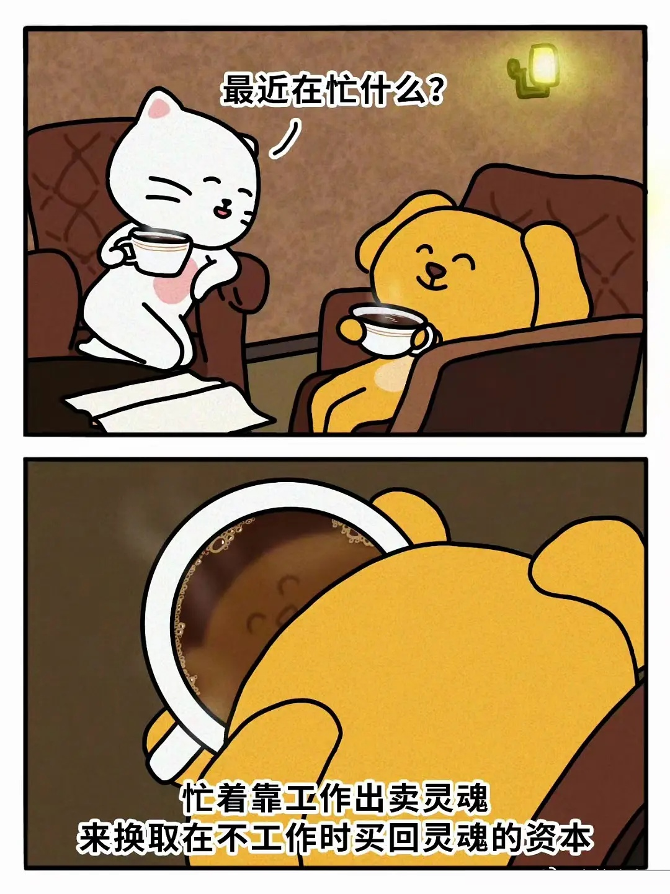
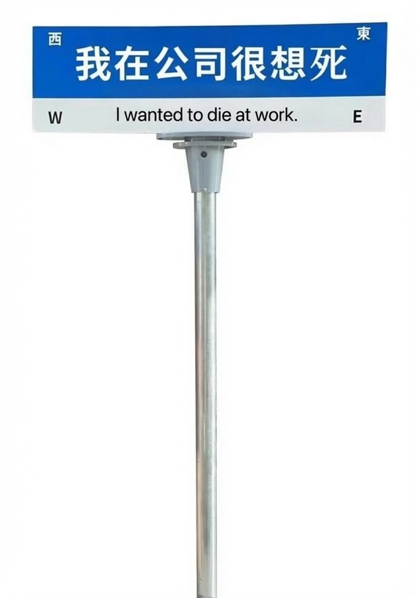
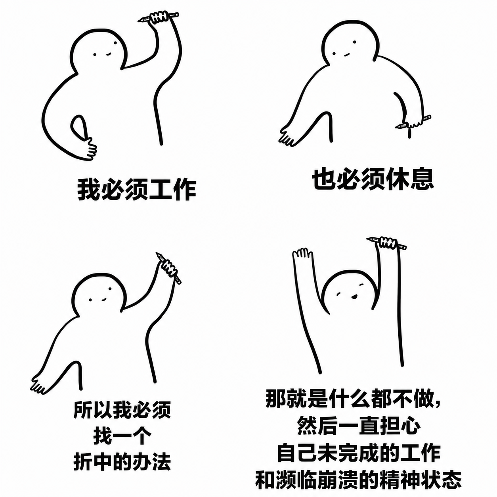
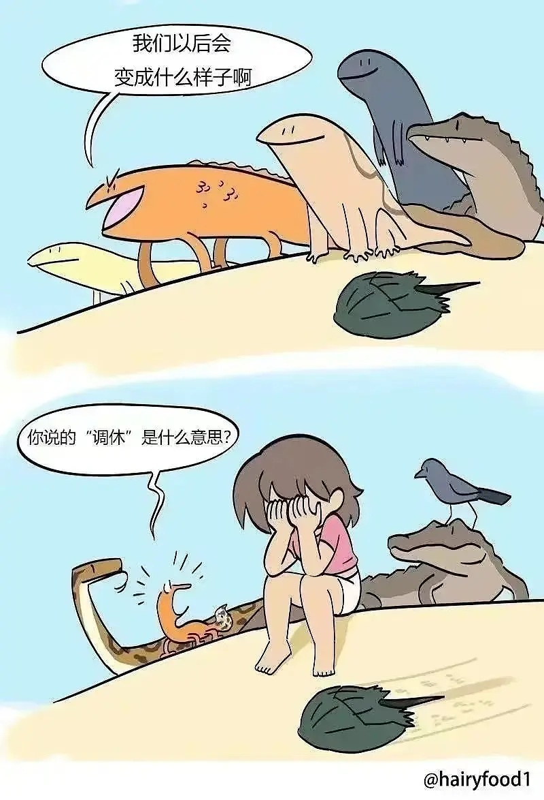

来一场愉快的丧图派对-No.1
背景
我是一个丧图爱好者。
挖掘丧图、收集丧图对我来说是一种非常解压的行为，我常常热衷于在豆瓣的各种丧逼小组（现在没了）梗图小组挖掘有趣的刺痛的图片，试图沉溺于这种痛苦的表达以麻醉自身。在2024年的夏日，这种行为达到了顶峰，大量的丧图试图从难以排解的焦虑中将我捞起。
感谢丧图！
虽然这两年丧图对我情绪的影响越发不显著，一些过于直白的丧图也让人索然无味，但是我依旧喜欢那种丧到底端全无希望的自由感受。而我也不舍得这些药效下降的丧图沉默地封存在我的相册里，所以，来一场愉快的丧图派对吧！
派对开始
很妙的结构。
我暂时还没有想出同样精妙的句子
经典伪名言，借名人的名号创建的梗图，如果卡夫卡真说过这句话，这张图的药效会更好一些
“跳槽”最初作为农事术语出现，指牲畜离开所在槽头到别的槽头去吃食。“跳槽”由“跳”（跨越动作）与“槽”（牲畜食具）构成复合词。
元代起，其含义开始转向人际关系领域，首次被用于形容男女间喜新厌旧的情感行为 。元代传奇中以魏明帝为跳槽，俗语本此。明代，该词发展为风月场所中嫖客更换妓女或妓女更换场所的隐语 。明代《初刻拍案惊奇》卷八记载：“忽然跳槽别恋，弃旧怜新” ，明代冯梦龙所编民歌集《挂枝儿》中亦有《跳槽》歌。
清代，词义进一步扩展，因雇工更换雇主的行为模式与上述“不专”相似，“跳槽”逐渐衍生出职业变动的含义。清代小说《品花宝鉴》中已有明确用例 。同时，该义项在方言中沿用，例如1869年广州话词典收录“跳槽”并释义为“无故离职”（To jump from one‘s manger;to leave an employ without cause）。
“跳槽”在共同语（普通话）里一度“销声匿迹”，但保留在广州话里，建国后主要在港澳地区使用 。现代用法在20世纪30年代已有文学用例，如作家艾芜在1931年写的小说《人生哲学的一课》中的用法 。上世纪八十年代改革开放后，该词通过港澳地区重新传入内地并广泛使用 ，最终成为描述工作变动的中性乃至积极的职场术语。
—— 百度百科
所以打工人的的确确是卖身的牛马了（误）
工作的优先级好像确实越来越追赶死生大事，希望途中荒谬的语调不会成为现实。
但话又说回来，设想一个漫画主人公是一个因为丧失生活希望（各种各样的悲惨故事）而寻死的牛马，每一话开头都在计划自己怎么结束生命，但总会因为黑心公司突如其来的不人道的工作让他精力耗尽，没有力气自绝，然后醒来又是毫无希望的一天，感觉也蛮有趣的。
不过听起来怎么有种给黑心公司洗白的感觉……
众所周知，工作就是牛马的爱人！

这个结构倒是很匹配第一张图！
同样经典且可悲的句式是：透支年轻时的身体赚到的财富，全部用于老了以后在医院的费用
所以重要的永远不是工作，而是自己。
即使是强人们，追求的也是自己的野心，而并非“工作”。只有能完成野心的工作，才能称之为事业。

建议做成周边售卖

在无数个精疲力尽的夜晚，我就处于这样不舍得休息，又无力工作的状态，然后企图依靠刷手机来排解焦虑，只获得一具愈发疲惫的肉身，糊里糊涂地陷入多梦的睡眠，睁开双眼之时，又是半血的形态迎来痛苦的一天。

怀念千万年前的你和我，那时候不存在劳动异化，也没有社会规训，只要吃吃喝喝，爬来爬去，不死就行。而现在我们之间已经隔着一层可悲的厚障壁了……
结语
第一次丧图派对结束！
本次以工作为主题，毕竟工作是很多人生活的头等大敌。光我自己，每年都至少要有一个月时间陷入周期性工作抑郁，然后在无尽的内耗和思考中调解自己，认识自己。
现在的我不仅明白我已经丧失了工作的热情，也知道打工本身就是一种不可避免的劳动异化，但最终依旧没有离职，是因为我知道离职解决不了根本问题，暂时逃离是很容易的，一辈子逃离却很难，没有足够的心理准备只能有一次陷入焦虑。如何在工作之外构筑一套灵活的生活秩序，这才是有意义的，人要为自己而活，而不是为了工作，为了体系而活。